Approved reference and native implementation
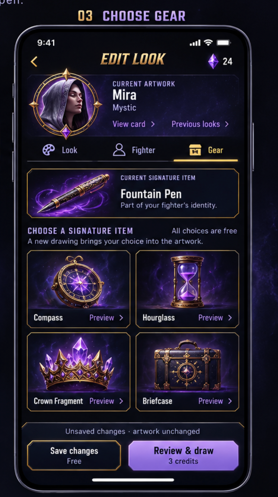
Supplied mockup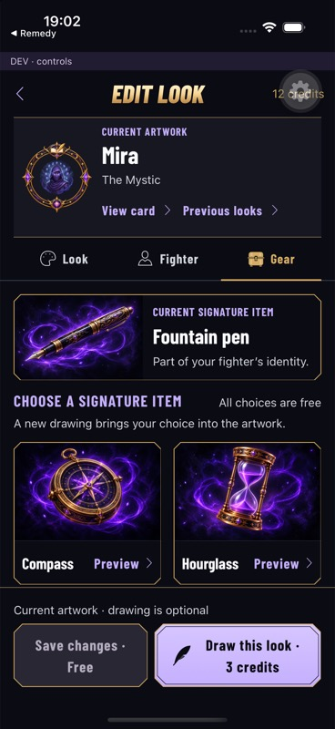
Native iOS · 402 ptNative labels scale and Preview retains a 48-point target. The list scrolls instead of compressing four cards above the footer. DEV and Expo controls belong only to the test fixture.
Original Gear icon
Equipment chest
Shared native SVG glyph · theme-aware ink Native states
402 pt · two columns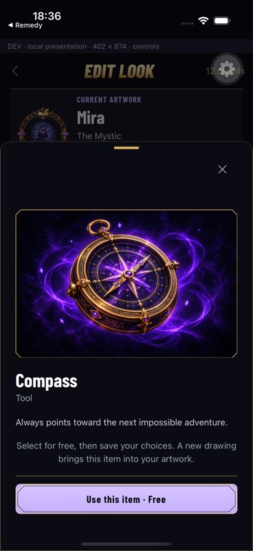
Item preview · free staging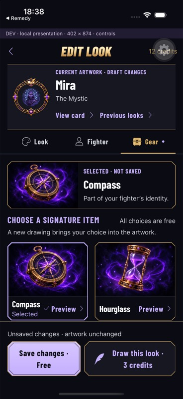
Selection · unsaved feedback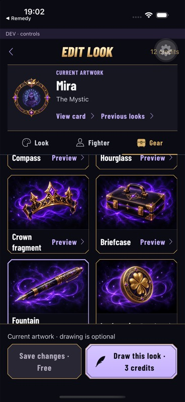
Catalogue · scrolls naturally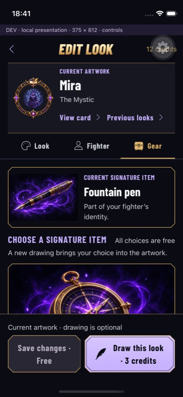
375 pt · one column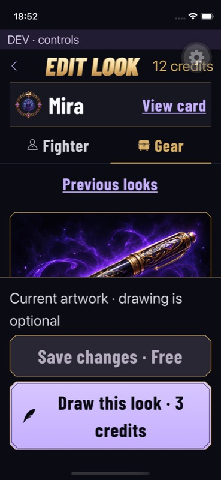
Accessibility Medium · selected rail and stacked actions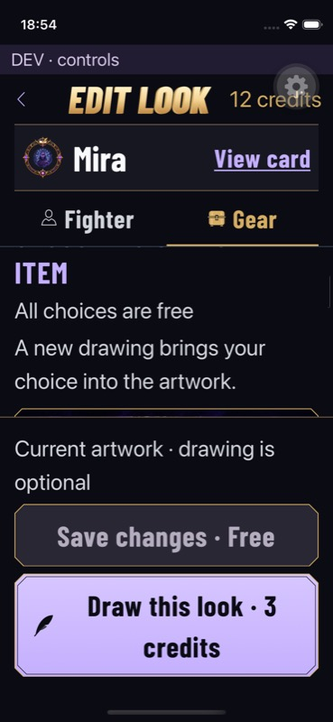
Accessibility Medium · scrolling content Complete regenerated catalogue
Full-resolution artwork is bundled offline. Names, gold borders and Preview controls are native UI, separate from these illustrations.
Fountain PenCompassHourglass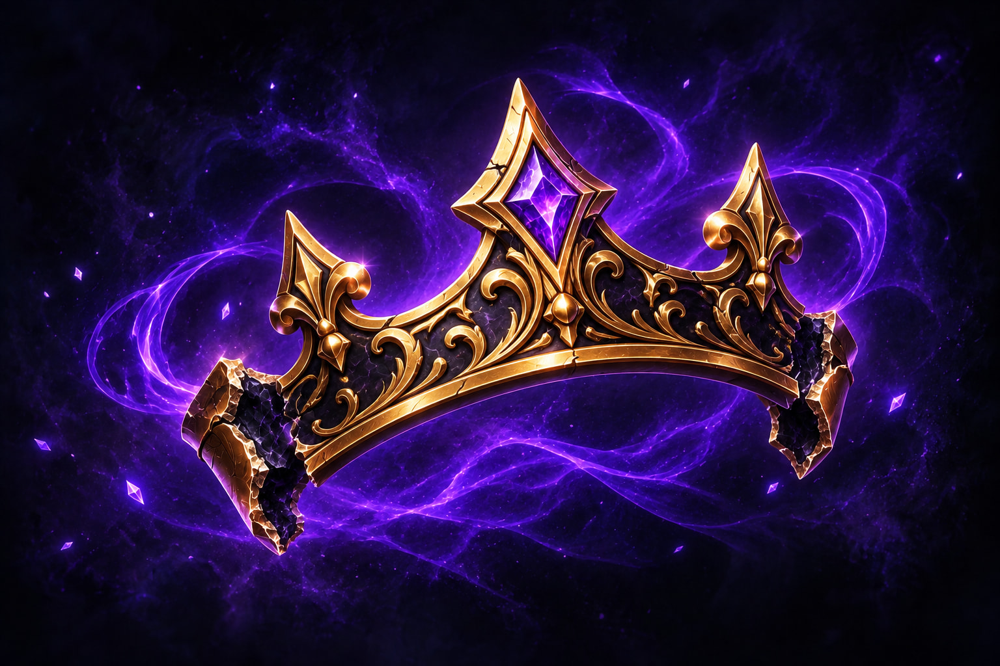
Crown FragmentBriefcaseLucky Coin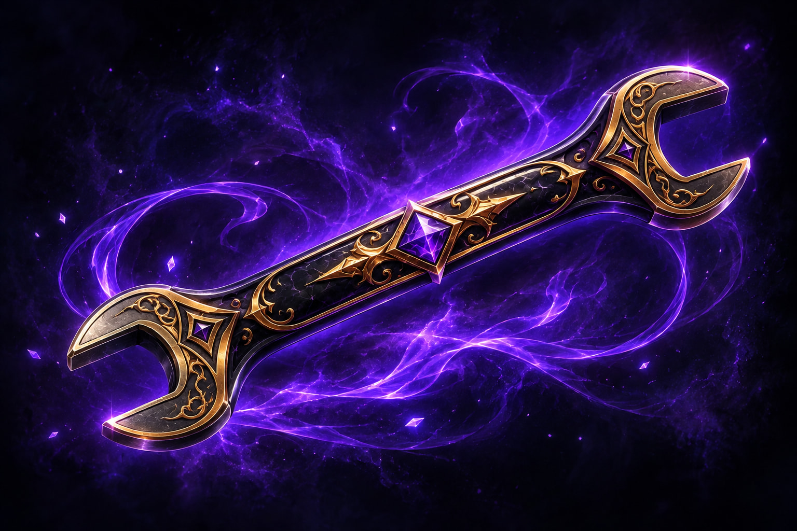
WrenchMicrophoneTarot CardStopwatch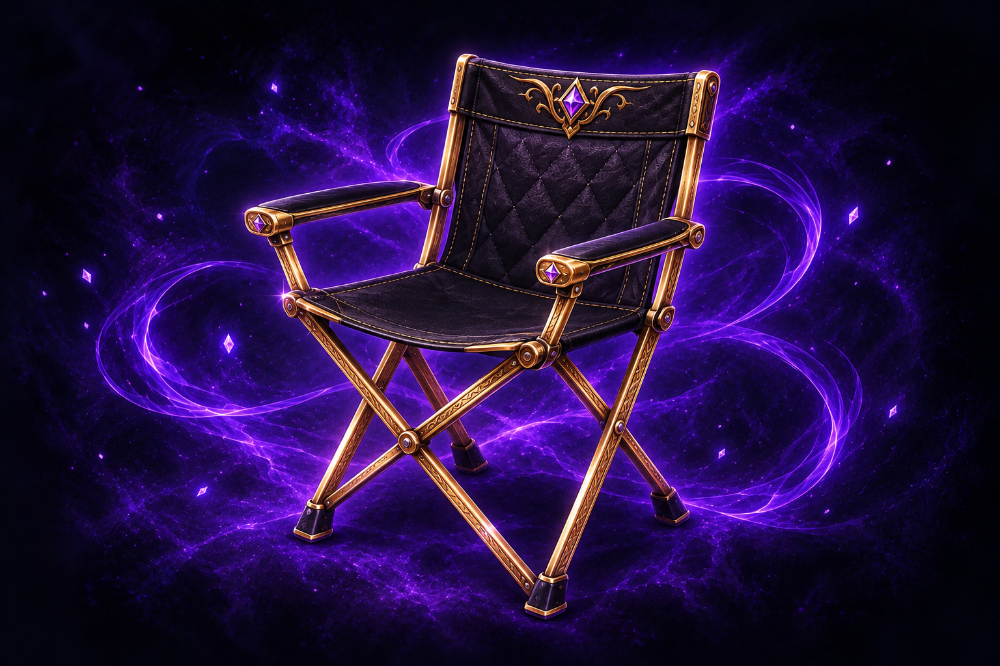
Folding Chair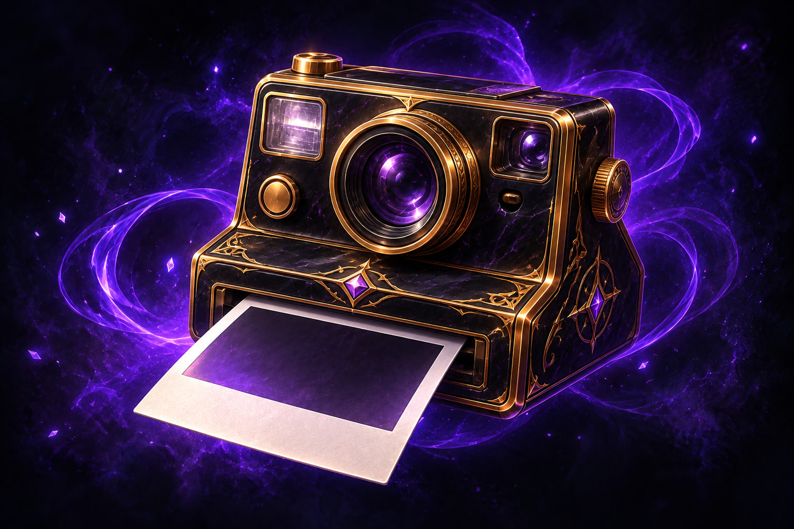
Polaroid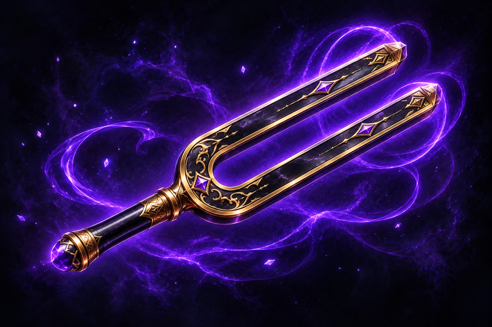
Tuning Fork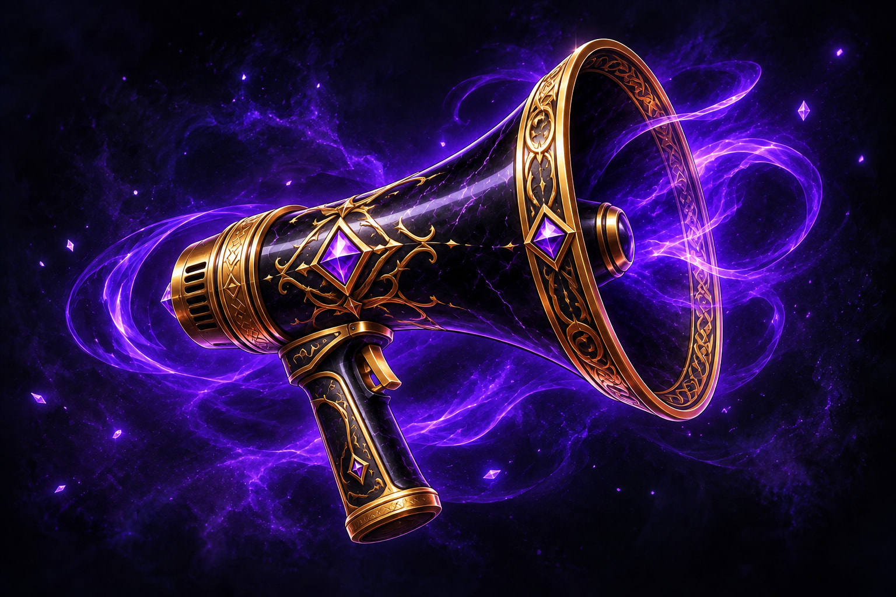
MegaphoneUmbrella Validation: 163 Jest suites / 1,356 tests passed; TypeScript passed; lint has one pre-existing warning. Android validation remains blocked. See the report for native-check limits.